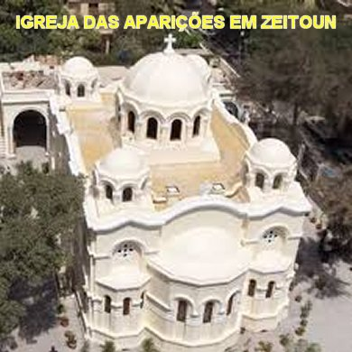
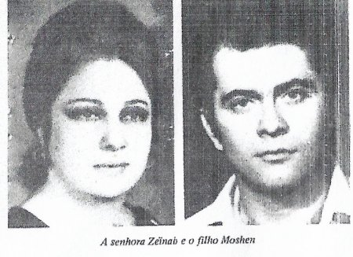
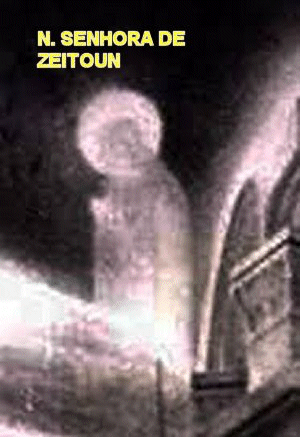
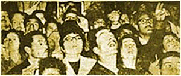
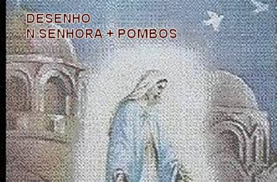
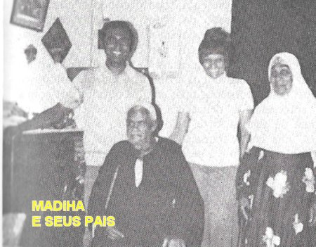

“MILAGRES IMPRESSIONANTES”
AS TESTEMUNHAS
FALAM 
As Comissões instaladas pelo Governo e pelo Papa Kyrillos, Patriarca da Alexandria, objetivando colher todos os testemunhos e os melhores documentos sobre as Aparições, diariamente exercitavam um longo trabalho numa preciosa atividade. Aqui realçaremos alguns depoimentos:
A senhora Berlanti Kamel Luis depondo diante da Comissão oficial de inquérito, narrou com testemunhos, os fatos ocorridos com ela e sua família: "Quando a VIRGEM SANTÍSSIMA começou a aparecer, eu, meu marido e meus filhos presenciamos seis Aparições. Para nós, tudo começou assim: numa noite em que os meus filhos regressaram de Heliópolis às 22 horas, eles viram em torno da Igreja uma grande multidão que exclamava”: “Eis a VIRGEM que aparece!” Observando ao redor, viram uma senhora humilde, com roupa simples bem usada, junto ao gradeamento da Igreja, tendo ao seu lado a sua filha, que era paralítica desde criancinha. Enquanto a mãe rezava e suplicava a intercessão da MÃE DE DEUS para curar a menina, sua filha paralítica levantou-se normalmente sustentada por suas próprias pernas e caminhou ao redor da sua mãe. Ela repleta de alegria, chorando e derramando lágrimas em profusão, abraçou fortemente a filha e ambas emocionadas com aquele maravilhoso milagre, ajoelharam na calçada da Igreja com os braços abertos em altas vozes, louvando e agradecendo a SANTÍSSIMA VIRGEM MARIA e ao nosso querido e amado DEUS.Foi uma surpresa imensa e envolvente, todos que estavam ali riam e choravam de alegria e de emoção. Não tenho outras palavras para descrever o desenvolvimento dos fatos... Mas posso confirmar, foi um acontecimento lindo, um milagre maravilhoso”.

O senhor da Comissão de Inquérito lhe perguntou: - “Senhora Zeinab, que impressão lhe causou a Aparição sob o aspecto religioso?” A senhora respondeu: “Dir-lhe-ei que nós somos muçulmanos, e no Corão, existe uma oração dedicada a SANTÍSSIMA VIRGEM MARIA e acreditamos NELA. Quanto a Aparição da VIRGEM MARIA, ELA me comoveu bastante, nunca pensei em ver algo tão belo e cativante. Fui educada pelas Religiosas do SAGRADO CORAÇÃO DE JESUS, em Heliópolis; as Freiras tinham inúmeras estátuas da VIRGEM, e numa sala havia uma bonita miniatura da Gruta de Lourdes; vi também muitas fotografias, mas nunca vi nada tão maravilhoso como esta Aparição. A senhora rezou? Rezei sim, na minha religião... Esse fato me tornou mais crente do que realmente eu era. Sem dúvida, foi algo comovedor! O senhor da Comissão agradeceu: “Senhora muito obrigado pelo seu testemunho”. Ela respondeu com um sorriso:“Mas nada tem que me agradecer...”
O Senhor e a Senhora
Goubran se apresentaram para depor perante a Comissão. Com delicadeza eles foram
recebidos e o Senhor Goubran logo entrou no 
QUANTIDADE IMPRESSIONANTE

Foram milagres de todas as naturezas e das mais variadas especificações que aconteceram, em benefícios daqueles que amorosamente buscaram a tão querida e amada atenção de NOSSA MÃE SANTÍSSIMA. E por isso mesmo, respeitando os limites de nosso Site, descreveremos a seguir mais dois importantes fatos, para coroar esse precioso acontecimento, possibilitando a todos compreenderem um pouco mais, a grandeza e o ilimitado AMOR DE DEUS por todos nós, enviando-nos a SUA própria MÃE para aliviar os problemas e as tristezas que existem no corpo e no coração da humanidade.NOSSA SENHORA apareceu todas as noites ou quase todas, durante o primeiro ano de Aparições, do dia 2 de Abril de 1968 a 2 de Abril de 1969. No segundo ano de Abril de 1969 a Abril de 1970, a maioria das Aparições aconteceu na aurora dos dias, começando aproximadamente às 5 horas e terminando aproximadamente às 9 horas da manhã. Neste segundo ano, na maioria das Aparições, via-se somente a metade de NOSSA SENHORA, ou seja, da cintura para cima, como se ELA estivesse numa janela; no local dos vitrais das cúpulas, os vitrais desapareciam e ficava o vão. Às vezes ELA trazia o MENINO JESUS. Concluída a Aparição os vitrais voltavam aos seus locais. No terceiro ano, ELA apareceu poucas vezes. De um modo geral, o povo procurou acompanhar todas as Aparições e se manifestavam, na sua maioria, com palavras agradecidas e com o coração cheio de amor.“Muitas pessoas abertamente chegavam a declarar que sentia nascer um fogo no interior do coração, infundindo-lhes vigor e empenho de rezar, de agradecer a DEUS e a VIRGEM MARIA, assim como, um decidido e inquestionável desejo de corrigir o caminho da própria existência, cultivando mais a fé, rezando com mais frequência, e buscando nas oportunidades, ajudar ou auxiliar aqueles que necessitavam”.

Um exemplo admirável foi o caso da senhora Inchra Mahmoud, mulher casada que tinha dois filhos homens. Ela e seu esposo eram negociantes, e tinha também uma propriedade agrícola e alguns animais, inclusive cavalos, que ela e o marido gostavam de montar para percorrer a propriedade e ir a uma Vila próxima. Certa manhã de um dia bem ensolarado em Novembro de 1960, querendo dar uma corrida com o seu animal predileto, depois de um bom trajeto com certa velocidade, o animal estancou de repente próximo a umas árvores frutíferas e onde também existia pelo terreno, boa quantidade de blocos de pedra. Ela perdeu o equilíbrio e foi lançada ao solo por cima do animal, quebrando um braço, uma perna, e o pior, tendo um sério problema na coluna que lhe causou uma terrível paralisia. Explica à senhora Inchra Mahmoud. “Fiquei paralítica da cintura para baixo. Foi um tempo difícil, pois procuramos diversas Clinicas especializada e inclusive, consultórios de médicos de renome. Todavia, foram incapazes de resolver o meu problema. Naqueles tempos, eu frequentava a Igreja Copta Cristã não com total pontualidade, porque na verdade preferia rezar em casa. Mas depois do acidente a minha vida mudou completamente, pois permanecia sempre numa cadeira de rodas, não ia a lugar nenhum, e a noite, dormia numa cama especial. Também não tinha a menor disposição para ir a algum lugar , inclusive o meu marido vendeu a propriedade agrícola e os animais, porque não tínhamos nenhuma vontade de voltar lá. Decidi seriamente utilizar os meus dias para rezar. Rezar para mim, por minha família, por meus dois filhos e por aquelas pessoas que necessitavam de orações. Quando em 1968, soubemos que a SANTÍSSIMA VIRGEM MARIA veio visitar a nossa Igreja Copta de Zeitoun, eu e meu marido ficamos encorajados e decidimos ir lá para rezar para nossa MÃE DO CÉU. Nossos dois filhos estudavam, mas sempre arranjavam um tempo para também ir a Igreja em nossa companhia. No dia 10 de Maio nos preparamos e fomos a Igreja: eu, meu marido e um de meus filhos. Fomos de carro e deixamos o veiculo numa área reservada a estacionamento. Meu marido e meu filho me colocaram na cadeira de rodas, como normalmente faziam, e me conduziram ao Templo, entrando pela porta principal da Igreja. Ali, caminhando, desde o inicio vemos o Altar Principal... Mas, de repente, vi a SANTÍSSIMA VIRGEM MARIA em pé no Altar, bem defronte a passarela de entrada, por onde eu estava sendo conduzida. No susto e na alegria daquele encontro, gritei forte: “VIRGEM SANTA, MÃE DE DEUS, curai-me”. “No mesmo momento senti um forte calafrio que me impulsionou e me lançou, era como se alguém estivesse me puxando para levantar, e numa fração de segundos levantei-me da cadeira e bem esperta, corri para o Altar... Neste instante NOSSA SENHORA desapareceu... Mas eu gritei por ELA, gritei bem alto, pela bondade imensa de nossa MÃE DO CÉU, e chorei bastante, cheia de agradecimentos a DEUS e a VIRGEM MARIA, porque verdadeiramente eu estava curada de todos os meus problemas. Corri para junto de uma linda imagem DELA, e me ajoelhei com o Terço nas mãos, e rezei com o coração alegre e minha face completamente inundada pelas lágrimas”.As pessoas que passavam por ali ficavam emocionadas ao presenciarem aquele admirável milagre e os sinceros agradecimentos daquela mulher. A senhora Inchra continuou com a narrativa: “Depois de permanecermos ali um tempo considerável, saímos para o lado de fora a fim de apreciarmos a Aparição que acontecia no alto da Cúpula maior de cobertura da Igreja. NOSSA SENHORA estava linda e ainda olhou e sorriu para mim. Minha emoção foi muito grande em sentir com toda plenitude o imenso e generoso Amor de nossa MÃE DO CÉU. Naquele local choramos e rezamos muito em agradecimentos a DEUS e a VIRGEM. Por fim, já eram 1 hora e 45 minutos da madrugada do dia seguinte, dia 11 de Maio, quando a SANTÍSSIMA VIRGEM MARIA benzeu o povo e partiu de retorno ao Céu. Vagarosamente caminhamos até o estacionamento e pegamos o nosso carro. Uma surpresa! Ele não estava querendo funcionar, apesar do empenho do meu marido. Então eu e meu filho deixamos o marido na direção e fomos empurrar o carro. Com dois arrancos fortes o carro pegou. Eu estava mesmo, mais forte do que nunca. Eu e meu filho entramos no veículo e fomos para casa, com o coração alegre, com um sorriso imenso que atravessava o nosso rosto na horizontal, de orelha a orelha, felizes da vida, porque agora juntos, todos nós poderíamos trabalhar e agradecer a NOSSO SENHOR, o pão de cada dia”.
Muito bonito
e muito estimulante, é também o Caso da Jovem Estudante Madiha Mohammed Saíd.
Já tendo completado a idade de 20 anos, os médicos que 